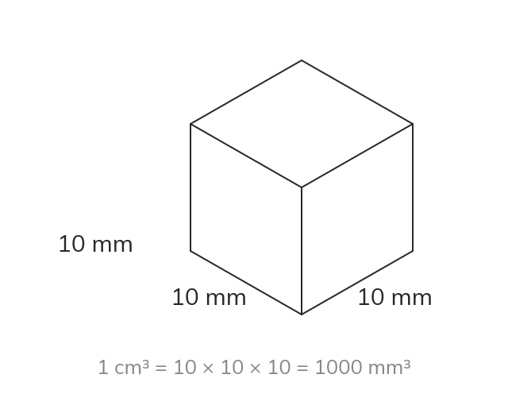

Cubing the factor
A 1 cm cube is 10 mm along every edge. So its volume is 10 × 10 × 10 = 1000 mm³. All three dimensions convert, not just one.
A 1 cm cube is 10 mm along every edge, so its volume is 10 × 10 × 10 = 1000 mm³. All three dimensions convert, not just one.